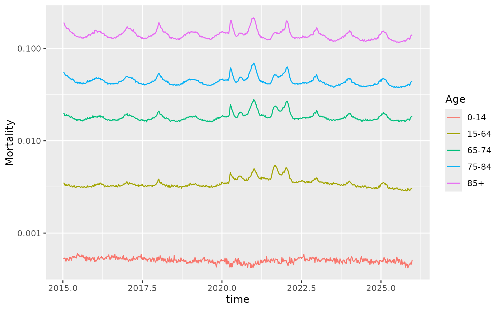

Weekly deaths and death rates in the USA, by sex and age group, from the second week of 2015 to the last week of 2025. The data are from the Short-Term Mortality Fluctuations (STMF) series of the Human Mortality Database.
Format
A data frame with 10314 rows and 6 columns:
- Year
Year
- Week
ISO week of the year
- Sex
"Female", "Male" or "Total"
- Age
Age group: "0-14", "15-64", "65-74", "75-84", "85+" or "Total"
- Deaths
Number of deaths
- Mortality
Weekly death rate: deaths divided by population exposure
Source
Human Mortality Database. Max Planck Institute for Demographic Research (Germany), University of California, Berkeley (USA), and French Institute for Demographic Studies (France). https://www.mortality.org
References
Hyndman, R J (2026) "That's weird: Anomaly detection using R", Chapter 11, https://OTexts.com/weird/timeseries.html.
Examples
us_mortality |>
filter(Sex == "Total", Age != "Total") |>
mutate(time = Year + (Week - 1) / 52) |>
ggplot(aes(x = time, y = Mortality, colour = Age)) +
geom_line() +
scale_y_log10()
